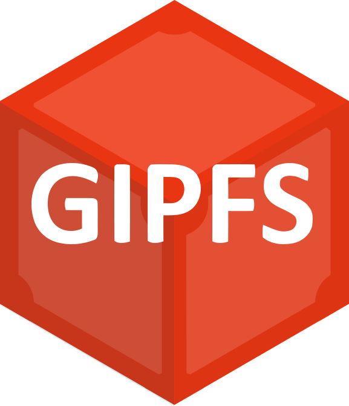

Floflis includes Firedoge, the web browser the web 3.0 was always needing. And web applications you use frequently (like Facebook or Gmail, for example) can be pinned to your desktop for faster access, just like apps on your computer. Also, you have built-in access to Ethereum (DeFi, DAOs, NFTs, tokens, etc.) and IPFS.
Included software
-
Firedoge web browser
-

Thunderbird
-

GIPFS (IPFS + a layer2)
Supported software
-

Chromium
-

Firefox